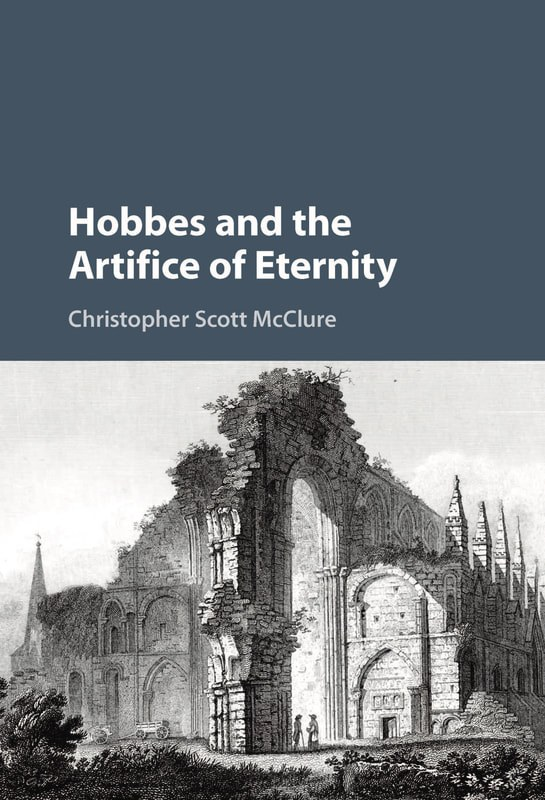

Political theorist.
Christopher Scott
McClure
Istudy how people make meaning under pressure — in Hobbes and Nietzsche, and in the documentary and audio storytelling I've written and produced since leaving full-time academic work. A Cambridge University Press book and a Georgetown Ph.D. sit on one shelf; production credits on Paramount+ and Discovery+ series, and two award-winning audio dramas, sit on the other. This is a record of both, and of how they connect.
Toronto, 2026
Folio I
Research

Hobbes and the Artifice of Eternity
Cambridge University Press, 2016
Journal Articles
- “Sculpting Modernity: Machiavelli and Michelangelo's David” Interpretation, 2016
- “Learning from Franklin's Mistakes: Self-Interest Rightly Understood in the Autobiography” The Review of Politics 76 (2014): 69–82
- “War, Madness and Death: The Paradox of Honor in Hobbes's Leviathan” The Journal of Politics 76 (2014): 114–125
- “Hell and Anxiety in Hobbes's Leviathan” The Review of Politics 73 (2011): 1–27
- “No Country for Old Gods” Perspectives on Political Science 39 (2010): 46–51
- “Stopping to Smell the Roses” Perspectives on Political Science 37 (2008): 99–108
Current Research
A working paper on Thomas Hobbes's response to Sir William Davenant's preface to Gondibert, examining tragedy, poetic representation, disenchantment, and moral education in early modern political thought.
Folio II
Teaching & Appointments
Tufts University
Part-Time Lecturer, Political Science · Fall 2024
Yorkville University
Adjunct Faculty · 2021–2023
Harvard University
Postdoctoral Fellow, Program on Constitutional Government · 2013–2015
University of California, Davis
Visiting Assistant Professor, Political Science · 2011–2013
- The Political Philosophy of Nietzsche
- Early Modern Political Thought
- Late Modern Political Thought
- Machiavelli's Discourses on Livy
- American Political Thought
- Introduction to Political Theory
- War: Thucydides, Kant and Schmitt
- Despotism in Montesquieu and Herodotus
- Canadian Politics
Folio III
On Both Halves of This Page
After a Ph.D. in political theory and a postdoctoral fellowship at Harvard, an academic position didn't materialize on the timeline I'd hoped for. So I went looking for the questions I cared about — how people make meaning under pressure, what stories a society tells itself to hold together — wherever they were still being asked, and found them in documentary television and narrative podcasting. I kept teaching on the side throughout. The Reading Group, which I started in 2026, is where the two strands rejoin: the same close-reading method I learned in graduate school, now practiced in public, for an audience that isn't only other political theorists.
Folio IV
Story & Screen
Since 2016 I've worked as a producer and story developer for documentary television and audio fiction — research, interviewing, editorial supervision, and post-production for series built around real cases and testimony, alongside two serialized audio dramas of my own creation.
Two Canada Council for the Arts grants · Audio Verse Awards, Best Production & Best Storyteller · Hillman Prize in Broadcast Journalism (nomination)
- Associate Producer, Final Twist (CenterDrive Media)2025–
- Series Producer, documentary series for Paramount+ & Discovery+ (Bright North Studios)2022–2025
- Creator & producer, The Milkman of St. Gaff's2020–
- Creator & co-host, The Reading Group2026–